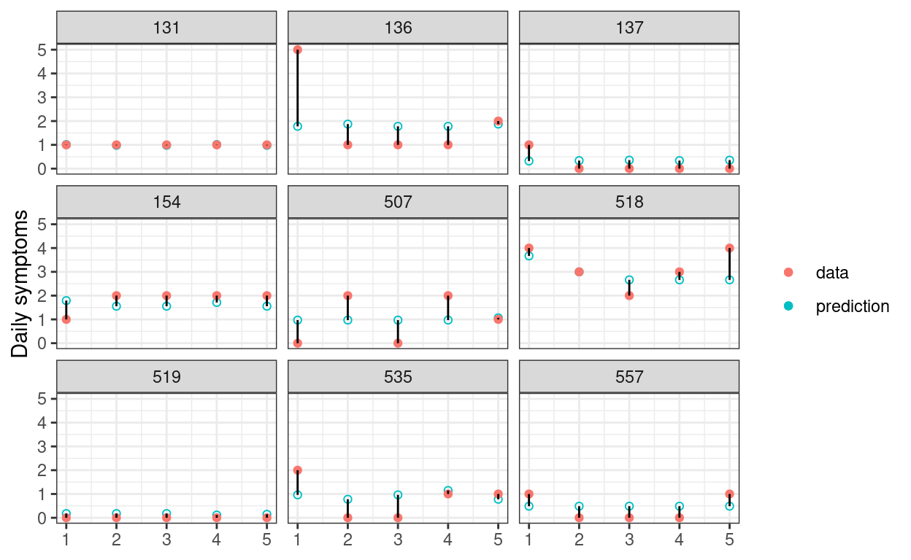

\[ \newcommand{\bv}[1]{\boldsymbol{\mathbf{#1}}} \]
Click here to download the Rmd file: week11-predictions-in-MLM.Rmd
# To install a package, run the following ONCE (and only once on your computer)
# install.packages("psych")
library(here) # makes reading data more consistent
library(tidyverse) # for data manipulation and plotting
library(haven) # for importing SPSS/SAS/Stata data
library(lme4) # for multilevel analysis
library(glmmTMB)
library(cAIC4) # for conditional AIC
library(glmmLasso) # for MLM lasso
library(MuMIn) # for model averaging
library(modelsummary) # for making tables
library(interactions) # for interaction plots
theme_set(theme_bw()) # Theme; just my personal preference
The data is the first wave of the Cognition, Health, and Aging Project.
# Download the data from
# https://www.pilesofvariance.com/Chapter8/SPSS/SPSS_Chapter8.zip, and put it
# into the "data_files" folder
zip_data <- here("data_files", "SPSS_Chapter8.zip")
# download.file("https://www.pilesofvariance.com/Chapter8/SPSS/SPSS_Chapter8.zip",
# zip_data)
stress_data <- read_sav(
unz(zip_data,
"SPSS_Chapter8/SPSS_Chapter8.sav"))
stress_data <- stress_data %>%
# Center mood (originally 1-5) at 1 for interpretation (so it becomes 0-4)
# Also women to factor
mutate(mood1 = mood - 1,
women = factor(women, levels = c(0, 1),
labels = c("men", "women")))
The data is already in long format. Let’s first do a subsample of 30 participants:
# First, separate the time-varying variables into within-person and
# between-person levels
stress_sub <- stress_sub %>%
group_by(PersonID) %>%
# The `across()` function can be used to operate the same procedure on
# multiple variables
mutate(across(c(symptoms, mood1, stressor),
# The `.` means the variable to be operated on
list("pm" = ~ mean(., na.rm = TRUE),
"pmc" = ~ . - mean(., na.rm = TRUE)))) %>%
ungroup()
Let’s use the model from last week
Level 1: \[\text{symptoms}_{ti} = \beta_{0i} + \beta_{1i} \text{mood1_pmc}_{ti} + e_{ti}\] Level 2: \[ \begin{aligned} \beta_{0i} & = \gamma_{00} + \gamma_{01} \text{mood1_pm}_{i} + \gamma_{02} \text{women}_i + \gamma_{03} \text{mood1_pm}_{i} \times \text{women}_i + u_{0i} \\ \beta_{1i} & = \gamma_{10} + \gamma_{11} \text{women}_i + u_{1i} \end{aligned} \]
m1 <- glmmTMB(
symptoms ~ (mood1_pm + mood1_pmc) * women + (mood1_pmc | PersonID),
data = stress_sub, REML = TRUE,
# The default optimizer did not converge; try optim
control = glmmTMBControl(
optimizer = optim,
optArgs = list(method = "BFGS")
)
)
# Cluster-specific
(obs1 <- stress_sub[1, c("PersonID", "mood1_pm", "mood1_pmc", "women",
"symptoms")])
># # A tibble: 1 × 5
># PersonID mood1_pm mood1_pmc women symptoms
># <dbl> <dbl> <dbl> <fct> <dbl>
># 1 103 0 0 women 0(pred1 <- predict(m1, newdata = obs1))
># [1] 0.3191718# Unconditional/marginal prediction
predict(m1, newdata = obs1, re.form = NA)
># [1] 0.9219858In the graph below, the 68% predictive intervals are shown in skyblue, whereas the actual data are shown in red. A good statistical model should have good preditive accuracy so that the skyblue dots and the red dots are close; a valid statistical model should have most of the skyblue intervals covering the observed data.
broom.mixed::augment(m1) %>%
# Random sample of 9 Persons
filter(PersonID %in% sample(unique(PersonID), 9)) %>%
group_by(PersonID) %>%
# Add a variable to indicate observation number
mutate(obsid = row_number()) %>%
ungroup() %>%
ggplot(aes(x = obsid, y = .fitted)) +
geom_point(aes(col = "prediction"), shape = 21) +
geom_point(aes(y = symptoms, col = "data")) +
geom_segment(aes(xend = obsid, yend = symptoms)) +
facet_wrap(~PersonID) +
labs(x = NULL, y = "Daily symptoms", col = NULL)

Let’s consider the prediction error for everyone in the data
# Obtain predicted values for everyone
pred_all <- predict(m1, re.form = NA)
# Now, compute the prediction error
prederr_all <- m1$frame$symptoms - pred_all
# Statisticians love to square the prediction error. The mean of the squared
# prediction error is called the mean squared error (MSE)
(mse_m1 <- mean(prederr_all^2))
># [1] 1.036614# The square root of MSE, the root mean squared error (RMSE), can be considered
# the average prediction error (marginal)
(rmse_m1 <- sqrt(mse_m1))
># [1] 1.018142Let’s now consider a model with more predictors:
# 35 main/interaction effects
m2 <- glmmTMB(
symptoms ~ (mood1_pm + mood1_pmc) * (stressor_pm + stressor) *
(women + baseage + weekend) +
(mood1_pmc + stressor | PersonID),
data = stress_sub,
# The default optimizer did not converge; try optim
control = glmmTMBControl(
optimizer = optim,
optArgs = list(method = "BFGS")
)
)
The model does not converge. However, let’s ignore the warning for a second, and check the prediction error:
pred_all <- predict(m2, re.form = NA)
prederr_all <- m2$frame$symptoms - pred_all
mse_m2 <- mean(prederr_all^2)
tibble(Model = c("M1", "M2"),
`In-sample MSE` = c(mse_m1, mse_m2))
># # A tibble: 2 × 2
># Model `In-sample MSE`
># <chr> <dbl>
># 1 M1 1.04
># 2 M2 0.761You can see that the MSE drops with the more complex model. Does it mean that this more complex model should be preferred?
The problem of using in-sample prediction error to determine which model should be preferred is that the complex model will capture a lot of the noise in the data, making it not generalizable to other sample. In-sample prediction is not very meaningful, because if we already have the data, our interest is usually not to predict them. Instead, in research, we want models that will generalize to other samples. Therefore, learning all the noise in the sample is not a good idea, and will lead to overfitting—having estimates that are not generalizable to other samples.
To see this, let’s try to use the models we built on the 30 participants to predict symptoms for the remaining 75 participants:
# Get the remaining data
stress_test <- stress_data %>%
# Select participants not included in the previous models
filter(!PersonID %in% random_persons) %>%
# Person-mean centering
group_by(PersonID) %>%
# The `across()` function can be used to operate the same procedure on
# multiple variables
mutate(across(
c(symptoms, mood1, stressor),
# The `.` means the variable to be operated on
list(
"pm" = ~ mean(., na.rm = TRUE),
"pmc" = ~ . - mean(., na.rm = TRUE)
)
)) %>%
ungroup()
# Prediction error from m1
pred_all <- predict(m1,
newdata = stress_test, re.form = NA,
allow.new.levels = TRUE
)
prederr_all <- stress_test$symptoms - pred_all
mse_m1 <- mean(prederr_all^2, na.rm = TRUE)
# Prediction error from m2
pred_all <- predict(m2,
newdata = stress_test, re.form = NA,
allow.new.levels = TRUE
)
prederr_all <- stress_test$symptoms - pred_all
mse_m2 <- mean(prederr_all^2, na.rm = TRUE)
# Print out-of-sample prediction error
tibble(Model = c("M1", "M2"),
`Out-of-sample MSE` = c(mse_m1, mse_m2))
># # A tibble: 2 × 2
># Model `Out-of-sample MSE`
># <chr> <dbl>
># 1 M1 1.84
># 2 M2 2.47As you can see from above, the prediction on data not used for building the model is worse. And m2 makes much worse out-of-sample prediction than m1, because when the sample size is small relative to the size of the model, a complex model is especially prone to overfitting, as it has many parameters that can be used to capitalize on the noise of the data.
As suggested before, we should care about out-of-sample prediction error than in-sample prediction error, so in this case m1 should be preferred. In practice, however, we don’t usually have the luxury of having another sample for us to get out-of-sample prediction error. So what should we do?
A simple solution is cross-validation, which is extremely popular in machine learning. The idea is to split the data into two parts, just like what we did above. Then fit the model in one part, and get the prediction error on the other part. The process is repeated \(K\) times for a \(K\)-fold cross-validation until the prediction error is obtained on every observation.
It should be pointed out that \(K\)-fold cross-validation, gives a biased estimate of prediction error especially when \(K\) is small, but it is extremely intensive when \(K\) is large, as it requires refitting the model \(K\) times. Below is a demo for doing a 5-fold cross-validation on the training data (with 30 participants) with lme4::lmer() (you can do the same with glmmTMB), which is mainly for you to understand its logic.
# Split the index of 30 participants into 5 parts
num_folds <- 5
random_sets <- split(
random_persons,
rep_len(1:num_folds, length(random_persons))
)
# Initialize the sum of squared prediction errors for each model
sum_prederr_m1 <- sum_prederr_m2 <- 0
# Loop over each set
for (setk in random_sets) {
# Fit model 1 on the subset
fit_m1 <- lmer(
symptoms ~ (mood1_pm + mood1_pmc) * women + (mood1_pmc | PersonID),
data = stress_sub,
# Select specific observations
subset = !PersonID %in% setk
)
# Remaining data
stress_sub_test <- stress_sub %>% filter(PersonID %in% setk)
# Obtain prediction error
pred_m1_test <- predict(fit_m1, newdata = stress_sub_test, re.form = NA)
prederr_m1 <- stress_sub_test$symptoms - pred_m1_test
sum_prederr_m1 <- sum_prederr_m1 + sum(prederr_m1^2, na.rm = TRUE)
# Fit model 2 on the subset
fit_m2 <- lmer(
symptoms ~ (mood1_pm + mood1_pmc) * (stressor_pm + stressor) *
(women + baseage + weekend) +
(mood1_pmc + stressor | PersonID),
data = stress_sub,
# Select specific observations
subset = !PersonID %in% setk
)
# Remaining data
stress_sub_test <- stress_sub %>% filter(PersonID %in% setk)
# Obtain prediction error
pred_m2_test <- predict(fit_m2, newdata = stress_sub_test, re.form = NA)
prederr_m2 <- stress_sub_test$symptoms - pred_m2_test
sum_prederr_m2 <- sum_prederr_m2 + sum(prederr_m2^2, na.rm = TRUE)
}
# MSE (dividing the sum by 150 observations)
tibble(Model = c("M1", "M2"),
`5-fold CV MSE` = c(sum_prederr_m1 / 150, sum_prederr_m2 / 150))
># # A tibble: 2 × 2
># Model `5-fold CV MSE`
># <chr> <dbl>
># 1 M1 1.18
># 2 M2 2.95# The estimated out-of-sample MSE is more than double for m2 than for m1
A special case of cross-validation is to use \(N - 1\) observations to build the model to predict the remaining one observation, and repeat the process \(N\) times. This is the LOO, which is essentially an \(N\)-fold cross validation. While this may first seem very unrealistic given that the model needs to be fitted \(N\) times, there are computational shortcuts or approximations that can make this much more efficient, and one of them that uses the Pareto smoothed importance sampling (PSIS) is available for models fitted with brms. So we can do
# Initialize the sum of squared prediction errors for each model
sum_prederr_m1 <- sum_prederr_m2 <- 0
# Loop over each person
for (personk in random_persons) {
# Fit model 1 on the data without personk
fit_m1 <- lmer(
symptoms ~ (mood1_pm + mood1_pmc) * women + (mood1_pmc | PersonID),
data = stress_sub,
# Select specific observations
subset = PersonID != personk
)
# Data for personk
stress_sub_test <- stress_sub %>% filter(PersonID == personk)
# Obtain prediction error
pred_m1_test <- predict(fit_m1, newdata = stress_sub_test, re.form = NA)
prederr_m1 <- stress_sub_test$symptoms - pred_m1_test
sum_prederr_m1 <- sum_prederr_m1 + sum(prederr_m1^2, na.rm = TRUE)
# Fit model 2 on the subset
fit_m2 <- lmer(
symptoms ~ (mood1_pm + mood1_pmc) * (stressor_pm + stressor) *
(women + baseage + weekend) +
(mood1_pmc + stressor | PersonID),
data = stress_sub,
# Select specific observations
subset = PersonID != personk
)
# Data for personk
stress_sub_test <- stress_sub %>% filter(PersonID == personk)
# Obtain prediction error
pred_m2_test <- predict(fit_m2, newdata = stress_sub_test, re.form = NA)
prederr_m2 <- stress_sub_test$symptoms - pred_m2_test
sum_prederr_m2 <- sum_prederr_m2 + sum(prederr_m2^2, na.rm = TRUE)
}
# MSE (dividing the sum by 150 observations)
tibble(Model = c("M1", "M2"),
`LOO CV MSE` = c(sum_prederr_m1 / 150, sum_prederr_m2 / 150))
># # A tibble: 2 × 2
># Model `LOO CV MSE`
># <chr> <dbl>
># 1 M1 1.23
># 2 M2 3.37# The results are similar
which again suggested m1 is expected to have less out-of-sample prediction error. In practice, 5 or 10-fold CV is usually used to save time.
With hierarchical data, cross-validation can be done at different levels. What we did before was to split the sample of clusters, i.e., CV at the top level (i.e., level 2, or person). This kind of CV is most relevant when one is interested in prediction at the cluster level. Another way to do CV is to split the data within clusters. For example, here each person has five time points max, so we can use four time points to build model to predict the remaining time point.
# Add time to the data
stress_sub <- stress_sub %>%
group_by(PersonID) %>%
mutate(time = row_number())
# Initialize the sum of squared prediction errors for each model
sum_prederr_m1 <- sum_prederr_m2 <- 0
# Loop over each person
for (t in 1:5) {
# Fit model 1 on the data without personk
fit_m1 <- lmer(
symptoms ~ (mood1_pm + mood1_pmc) * women + (mood1_pmc | PersonID),
data = stress_sub,
# Select specific observations
subset = time != t
)
# Data for personk
stress_sub_test <- stress_sub %>% filter(time == t)
# Obtain prediction error
pred_m1_test <- predict(fit_m1, newdata = stress_sub_test, re.form = NA)
prederr_m1 <- stress_sub_test$symptoms - pred_m1_test
sum_prederr_m1 <- sum_prederr_m1 + sum(prederr_m1^2, na.rm = TRUE)
# Fit model 2 on the subset
fit_m2 <- lmer(
symptoms ~ (mood1_pm + mood1_pmc) * (stressor_pm + stressor) *
(women + baseage + weekend) +
(mood1_pmc + stressor | PersonID),
data = stress_sub,
# Select specific observations
subset = time != t
)
# Data for personk
stress_sub_test <- stress_sub %>% filter(time == t)
# Obtain prediction error
pred_m2_test <- predict(fit_m2, newdata = stress_sub_test, re.form = NA)
prederr_m2 <- stress_sub_test$symptoms - pred_m2_test
sum_prederr_m2 <- sum_prederr_m2 + sum(prederr_m2^2, na.rm = TRUE)
}
# MSE (dividing the sum by 150 observations)
tibble(
Model = c("M1", "M2"),
`5-fold Within-Cluster CV MSE` =
c(sum_prederr_m1 / 150, sum_prederr_m2 / 150)
)
># # A tibble: 2 × 2
># Model `5-fold Within-Cluster CV MSE`
># <chr> <dbl>
># 1 M1 1.09
># 2 M2 1.40Here, M1 is still better, but the difference is smaller. For more discussion on the difference, please check out this blog post, or the paper “Conditional Akaike information for mixed-effects models”.
A closely-related way to estimate the out-of-sample prediction is to use information criteria, which is based on information theory. Simply speaking, these are measures of the expected out-of-sample prediction error under certain assumptions (e.g., normality). The most famous one is the Akaike information criterion (AIC), named after statistician Hirotugu Akaike, who derived that under certain assumptions, the expected prediction error is the deviance plus two times the number of parameters in the model. We can obtain AICs using the generic AIC() function for cluster-level predictions, and the cAIC4::cAIC() function for individual-level predictions.
# Refit with lme4 as glmmTMB did not converge
fit_m1 <- lmer(symptoms ~ (mood1_pm + mood1_pmc) * women +
(mood1_pmc | PersonID),
data = stress_sub)
fit_m2 <- lmer(symptoms ~ (mood1_pm + mood1_pmc) * (stressor_pm + stressor) *
(women + baseage + weekend) +
(mood1_pmc + stressor | PersonID),
data = stress_sub)
# Cluster-level prediction
AIC(fit_m1, fit_m2)
># df AIC
># fit_m1 10 399.4346
># fit_m2 43 399.9684# Individual-level prediction
rbind(
m1 = cAIC(fit_m1)[c("df", "caic")],
m2 = cAIC(fit_m2)[c("df", "caic")]
)
># df caic
># m1 29.06952 367.2822
># m2 51.5599 388.6662Because AIC approximates the out-of-sample prediction error (for continuous, normal outcomes), a model with a lower AIC should be preferred. Here it shows m1 is better for individual-level prediction.
To avoid overfitting, we should compare models based on the out-of-sample prediction errors, which can be approxiamted by preferring models with lower AICs.
As a side note, AIC is commonly presented alongside BIC, the Bayesian information criterion (BIC). However, BIC was developed with very different motivations, and technically it is not an information criterion (and it is debatable whether it is Bayesian). However, it can be used in a similar way, where models showing lower BICs represent better fit. It tends to prefer models that are more parsimonious than the AIC.
Let’s compare several models:
mood1 and stressor, no random slopesmood1_pm, mood1_pmc, stressor_pm, stressor, no random slopesmood1_pm, mood1_pmc, stressor_pm, stressor, random slopesmood1_pm:stressor_pm, mood1_pmc:stressorm_1 <- lmer(
symptoms ~ mood1 + stressor + (1 | PersonID),
data = stress_sub, REML = FALSE
)
m_2 <- lmer(
symptoms ~ mood1_pm + mood1_pmc + stressor_pm + stressor +
(1 | PersonID),
data = stress_sub, REML = FALSE
)
m_3 <- lmer(
symptoms ~ mood1_pm + mood1_pmc + stressor_pm + stressor +
(mood1_pmc + stressor | PersonID),
data = stress_sub, REML = FALSE
)
m_4 <- lmer(
symptoms ~ mood1_pm * stressor + mood1_pmc * stressor +
(mood1_pmc + stressor | PersonID),
data = stress_sub, REML = FALSE
)
# Marginal AIC
AIC(m_1, m_2, m_3, m_4) # m_2 is the best
># df AIC
># m_1 5 404.2322
># m_2 7 403.5750
># m_3 12 410.2415
># m_4 13 414.3175# Conditional AIC
rbind(
m_1 = cAIC(m_1)[c("df", "caic")],
m_2 = cAIC(m_2)[c("df", "caic")],
m_3 = cAIC(m_3)[c("df", "caic")],
m_4 = cAIC(m_4)[c("df", "caic")]
) # m_1, m_2, m_3 similar
># df caic
># m_1 28.93959 369.3262
># m_2 28.75855 369.2557
># m_3 28.75855 369.2557
># m_4 30.80038 373.5176Overall, it seems (1) and (2) are best for predictions, with similar AICs.
# Use full data with centering
stress_data <- stress_data %>%
group_by(PersonID) %>%
# The `across()` function can be used to operate the same procedure on
# multiple variables
mutate(across(c(symptoms, mood1, stressor),
# The `.` means the variable to be operated on
list("pm" = ~ mean(., na.rm = TRUE),
"pmc" = ~ . - mean(., na.rm = TRUE)))) %>%
ungroup()
# Use lme4 as glmmTMB had convergence issue and did not compute AIC
# Require data without missing
stress_lm <- drop_na(stress_data)
m_full <- lmer(
symptoms ~ mood1_pm + mood1_pmc + stressor_pm + stressor +
women + baseage + weekend +
(mood1_pmc + stressor | PersonID),
na.action = "na.fail",
data = stress_lm,
REML = FALSE
)
# Fit all models with mood1_pm + mood1_pmc + stressor_pm + stressor, and
# compare marginal AIC
(dd_maic <- dredge(m_full,
fixed = ~ mood1_pm + mood1_pmc + stressor_pm + stressor,
rank = "AIC" # using marginal AIC
))
># Global model call: lmer(formula = symptoms ~ mood1_pm + mood1_pmc + stressor_pm +
># stressor + women + baseage + weekend + (mood1_pmc + stressor |
># PersonID), data = stress_lm, REML = FALSE, na.action = "na.fail")
># ---
># Model selection table
># (Int) bsg md1_pm md1_pmc str str_pm wkn wmn df
># 5 0.7357 1.842 0.1216 0.06794 0.8862 + 13
># 1 0.4809 1.835 0.1202 0.06323 0.9142 12
># 7 0.7581 1.848 0.1285 0.06200 0.8918 -0.04645 + 14
># 6 0.9238 -0.002391 1.857 0.1223 0.06764 0.8825 + 14
># 3 0.5044 1.842 0.1272 0.05713 0.9202 -0.04790 13
># 2 0.8611 -0.004780 1.866 0.1212 0.06271 0.9066 13
># 8 0.9212 -0.002079 1.861 0.1290 0.06179 0.8886 -0.04611 + 15
># 4 0.8560 -0.004426 1.870 0.1282 0.05675 0.9131 -0.04709 14
># logLik AIC delta weight
># 5 -701.827 1429.7 0.00 0.296
># 1 -703.200 1430.4 0.75 0.204
># 7 -701.628 1431.3 1.60 0.133
># 6 -701.814 1431.6 1.97 0.110
># 3 -702.988 1432.0 2.32 0.093
># 2 -703.149 1432.3 2.64 0.079
># 8 -701.618 1433.2 3.58 0.049
># 4 -702.944 1433.9 4.23 0.036
># Models ranked by AIC(x)
># Random terms (all models):
># 'mood1_pmc + stressor | PersonID'>#
># Call:
># model.avg(object = dd_maic)
>#
># Component model call:
># lmer(formula = symptoms ~ <8 unique rhs>, data = stress_lm,
># REML = FALSE, na.action = na.fail)
>#
># Component models:
># df logLik AIC delta weight
># 23457 13 -701.83 1429.65 0.00 0.30
># 2345 12 -703.20 1430.40 0.75 0.20
># 234567 14 -701.63 1431.26 1.60 0.13
># 123457 14 -701.81 1431.63 1.97 0.11
># 23456 13 -702.99 1431.98 2.32 0.09
># 12345 13 -703.15 1432.30 2.64 0.08
># 1234567 15 -701.62 1433.24 3.58 0.05
># 123456 14 -702.94 1433.89 4.23 0.04
>#
># Term codes:
># baseage mood1_pm mood1_pmc stressor stressor_pm
># 1 2 3 4 5
># weekend women
># 6 7
>#
># Model-averaged coefficients:
># (full average)
># Estimate Std. Error Adjusted SE z value Pr(>|z|)
># (Intercept) 0.7093827 0.6571310 0.6586361 1.077 0.28146
># womenwomen -0.1963555 0.2226084 0.2228554 0.881 0.37827
># mood1_pm 1.8468342 0.3714699 0.3723709 4.960 7e-07 ***
># mood1_pmc 0.1233922 0.1400432 0.1403830 0.879 0.37942
># stressor 0.0640387 0.1002116 0.1004545 0.637 0.52381
># stressor_pm 0.8980961 0.3023394 0.3030718 2.963 0.00304 **
># weekend -0.0145762 0.0459695 0.0460563 0.316 0.75163
># baseage -0.0009017 0.0079126 0.0079311 0.114 0.90948
>#
># (conditional average)
># Estimate Std. Error Adjusted SE z value Pr(>|z|)
># (Intercept) 0.709383 0.657131 0.658636 1.077 0.28146
># womenwomen -0.333532 0.196013 0.196489 1.697 0.08961 .
># mood1_pm 1.846834 0.371470 0.372371 4.960 7e-07 ***
># mood1_pmc 0.123392 0.140043 0.140383 0.879 0.37942
># stressor 0.064039 0.100212 0.100455 0.637 0.52381
># stressor_pm 0.898096 0.302339 0.303072 2.963 0.00304 **
># weekend -0.046903 0.072688 0.072865 0.644 0.51977
># baseage -0.003287 0.014845 0.014881 0.221 0.82519
># ---
># Signif. codes: 0 '***' 0.001 '**' 0.01 '*' 0.05 '.' 0.1 ' ' 1# Variable importance
importance(dd_maic)
># mood1_pm mood1_pmc stressor stressor_pm women
># Sum of weights: 1.00 1.00 1.00 1.00 0.59
># N containing models: 8 8 8 8 4
># weekend baseage
># Sum of weights: 0.31 0.27
># N containing models: 4 4# Fit all models with mood1_pm + mood1_pmc + stressor_pm + stressor, and
# compare conditional AIC
(dd_caic <- dredge(m_full,
fixed = ~ mood1_pm + mood1_pmc + stressor_pm + stressor,
rank = function(x) cAIC4::cAIC(x)$caic # using conditional AIC
))
># Global model call: lmer(formula = symptoms ~ mood1_pm + mood1_pmc + stressor_pm +
># stressor + women + baseage + weekend + (mood1_pmc + stressor |
># PersonID), data = stress_lm, REML = FALSE, na.action = "na.fail")
># ---
># Model selection table
># (Int) bsg md1_pm md1_pmc str str_pm wkn wmn df
># 3 0.5044 1.842 0.1272 0.05713 0.9202 -0.04790 13
># 4 0.8560 -0.004426 1.870 0.1282 0.05675 0.9131 -0.04709 14
># 7 0.7581 1.848 0.1285 0.06200 0.8918 -0.04645 + 14
># 1 0.4809 1.835 0.1202 0.06323 0.9142 12
># 2 0.8611 -0.004780 1.866 0.1212 0.06271 0.9066 13
># 5 0.7357 1.842 0.1216 0.06794 0.8862 + 13
># 6 0.9238 -0.002391 1.857 0.1223 0.06764 0.8825 + 14
># 8 0.9212 -0.002079 1.861 0.1290 0.06179 0.8886 -0.04611 + 15
># logLik IC delta weight
># 3 -702.988 1312.9 0.00 0.297
># 4 -702.944 1313.2 0.27 0.259
># 7 -701.628 1313.3 0.37 0.246
># 1 -703.200 1316.0 3.09 0.063
># 2 -703.149 1316.5 3.59 0.049
># 5 -701.827 1317.0 4.08 0.039
># 6 -701.814 1317.5 4.52 0.031
># 8 -701.618 1318.8 5.87 0.016
># Models ranked by IC(x)
># Random terms (all models):
># 'mood1_pmc + stressor | PersonID'>#
># Call:
># model.avg(object = dd_caic)
>#
># Component model call:
># lmer(formula = symptoms ~ <8 unique rhs>, data = stress_lm,
># REML = FALSE, na.action = na.fail)
>#
># Component models:
># df logLik IC delta weight
># 23456 13 -702.99 1312.95 0.00 0.30
># 123456 14 -702.94 1313.22 0.27 0.26
># 234567 14 -701.63 1313.32 0.37 0.25
># 2345 12 -703.20 1316.04 3.09 0.06
># 12345 13 -703.15 1316.54 3.59 0.05
># 23457 13 -701.83 1317.02 4.08 0.04
># 123457 14 -701.81 1317.47 4.52 0.03
># 1234567 15 -701.62 1318.82 5.87 0.02
>#
># Term codes:
># baseage mood1_pm mood1_pmc stressor stressor_pm
># 1 2 3 4 5
># weekend women
># 6 7
>#
># Model-averaged coefficients:
># (full average)
># Estimate Std. Error Adjusted SE z value Pr(>|z|)
># (Intercept) 0.702488 0.736992 0.738701 0.951 0.34162
># weekend -0.038577 0.068216 0.068370 0.564 0.57259
># mood1_pm 1.852095 0.373702 0.374609 4.944 8e-07 ***
># mood1_pmc 0.126697 0.140143 0.140483 0.902 0.36713
># stressor 0.059710 0.100592 0.100836 0.592 0.55375
># stressor_pm 0.907331 0.303253 0.303988 2.985 0.00284 **
># baseage -0.001488 0.009063 0.009084 0.164 0.86991
># womenwomen -0.110640 0.193378 0.193538 0.572 0.56754
>#
># (conditional average)
># Estimate Std. Error Adjusted SE z value Pr(>|z|)
># (Intercept) 0.702488 0.736992 0.738701 0.951 0.34162
># weekend -0.047174 0.072697 0.072874 0.647 0.51741
># mood1_pm 1.852095 0.373702 0.374609 4.944 8e-07 ***
># mood1_pmc 0.126697 0.140143 0.140483 0.902 0.36713
># stressor 0.059710 0.100592 0.100836 0.592 0.55375
># stressor_pm 0.907331 0.303253 0.303988 2.985 0.00284 **
># baseage -0.004193 0.014838 0.014874 0.282 0.77800
># womenwomen -0.333482 0.195956 0.196433 1.698 0.08957 .
># ---
># Signif. codes: 0 '***' 0.001 '**' 0.01 '*' 0.05 '.' 0.1 ' ' 1# Variable importance
importance(dd_caic)
># mood1_pm mood1_pmc stressor stressor_pm weekend
># Sum of weights: 1.00 1.00 1.00 1.00 0.82
># N containing models: 8 8 8 8 4
># baseage women
># Sum of weights: 0.35 0.33
># N containing models: 4 4The idea of Lasso, or more generally regularization, is that complex models tend to overfit in small samples and when the number of predictors is large. On the other hand, simple models, which means that when all predictors are assumed either not predictive or weakly predictive of the outcome, tend to underfit. Therefore, one can find the right fit by having the estimates to be somewhere between 0 and the maximum likelihood estimates. This is achieved in Lasso by adding a penalty in the minimization algorithm, usually called lambda, with larger lambda corresponding to a larger penalty.
Here is an example. Note that generally one standardizes the data so that the variables have standard deviations of 1s. It is, however, not discussed much in the literature whether this applies to cluster means and cluster mean centered variables for multilevel analysis. In the example below, I only standardize the raw variables.
stress_data <- read_sav(
unz(zip_data,
"SPSS_Chapter8/SPSS_Chapter8.sav")
)
stress_std <- stress_data %>%
mutate(across(
c(women, baseage, weekend, symptoms, mood, stressor),
~ (. - mean(., na.rm = TRUE)) / sd(., na.rm = TRUE)
))
# Subsample
stress_std <- stress_std %>%
drop_na() %>%
# filter(PersonID %in% random_persons) %>%
group_by(PersonID) %>%
# The `across()` function can be used to operate the same procedure on
# multiple variables
mutate(across(
c(symptoms, mood, stressor),
# The `.` means the variable to be operated on
list(
"pm" = ~ mean(., na.rm = TRUE),
"pmc" = ~ . - mean(., na.rm = TRUE)
)
)) %>%
ungroup() %>%
mutate(PersonID = as_factor(PersonID))
# Maximum likelihood estimates
m2_full <- lmer(
symptoms ~ (mood_pm + mood_pmc) * (stressor_pm + stressor) *
(women + baseage + weekend) +
(mood_pmc + stressor | PersonID),
data = stress_std,
REML = FALSE
)
# Lasso with lambda = 19
# First obtain the predictor matrix
pred_mat <- model.matrix(
symptoms ~ (mood_pm + mood_pmc + stressor_pm + stressor) +
(women + baseage + weekend), data = stress_std)
m2_penalized <- glmmLasso(
# First argument with fixed effect; it does not support the `*` notation
symptoms ~ mood_pm + mood_pmc + stressor_pm + stressor +
women + baseage + weekend +
(mood_pm + mood_pmc):(stressor_pm + stressor) +
(mood_pm + mood_pmc):(women + baseage + weekend) +
(stressor_pm + stressor):(women + baseage + weekend) +
(mood_pm + mood_pmc):(stressor_pm + stressor):(women + baseage + weekend),
# Random effects
rnd = list(PersonID = ~ mood_pmc + stressor),
data = stress_std,
lambda = 20,
final.re = TRUE
)
# Find lambda with lowest AIC
# lambda_grid <- seq(0, to = 100, by = 1)
# aic_grid <- rep(NA, length = length(lambda_grid))
# for (i in seq_along(lambda_grid)) {
# m2_penalized <- glmmLasso(
# # First argument with fixed effect; it does not support the `*` notation
# symptoms ~ mood_pm + mood_pmc + stressor_pm + stressor +
# women + baseage + weekend +
# (mood_pm + mood_pmc):(stressor_pm + stressor) +
# (mood_pm + mood_pmc):(women + baseage + weekend) +
# (stressor_pm + stressor):(women + baseage + weekend) +
# (mood_pm + mood_pmc):(stressor_pm + stressor):(women + baseage + weekend),
# # Random effects
# rnd = list(PersonID = ~ mood_pmc + stressor),
# data = stress_std,
# lambda = lambda_grid[i]
# )
# aic_grid[i] <- m2_penalized$aic
# }
# Compare the fixed effects
round(cbind(fixef(m2_full), m2_penalized$coefficients), 2)
># [,1] [,2]
># (Intercept) 0.07 0.04
># mood_pm 0.63 0.60
># mood_pmc 0.02 0.00
># stressor_pm 0.31 0.33
># stressor 0.04 0.04
># women -0.23 -0.15
># baseage -0.01 0.00
># weekend -0.01 0.00
># mood_pm:stressor_pm -0.30 -0.12
># mood_pm:stressor -0.01 0.00
># mood_pmc:stressor_pm 0.02 0.00
># mood_pmc:stressor 0.01 0.04
># mood_pm:women -0.31 -0.15
># mood_pm:baseage -0.04 -0.06
># mood_pm:weekend -0.02 0.00
># mood_pmc:women 0.04 0.00
># mood_pmc:baseage 0.07 0.00
># mood_pmc:weekend 0.08 0.08
># stressor_pm:women -0.09 -0.16
># stressor_pm:baseage 0.03 0.02
># stressor_pm:weekend 0.10 0.00
># stressor:women -0.06 -0.04
># stressor:baseage 0.01 0.00
># stressor:weekend -0.06 0.00
># mood_pm:stressor_pm:women 0.53 0.00
># mood_pm:stressor_pm:baseage 0.05 0.06
># mood_pm:stressor_pm:weekend 0.10 0.00
># mood_pm:stressor:women -0.06 0.00
># mood_pm:stressor:baseage -0.11 -0.12
># mood_pm:stressor:weekend -0.13 -0.05
># mood_pmc:stressor_pm:women 0.03 0.00
># mood_pmc:stressor_pm:baseage -0.08 0.00
># mood_pmc:stressor_pm:weekend 0.21 0.23
># mood_pmc:stressor:women -0.01 0.00
># mood_pmc:stressor:baseage 0.02 0.00
># mood_pmc:stressor:weekend -0.11 -0.10As can be seen, many of the coefficients have shrunken with Lasso. The variables that seem most useful in predicting symptoms are mood_pm, stressor_pm, women, mood_pm:stressor_pm, mood_pm:women, stressor_pm:women, mood_pm:stressor:baseage, mood_pmc:stressor_pm:weekend. The lambda value can be chosen using AIC or using cross-validation.